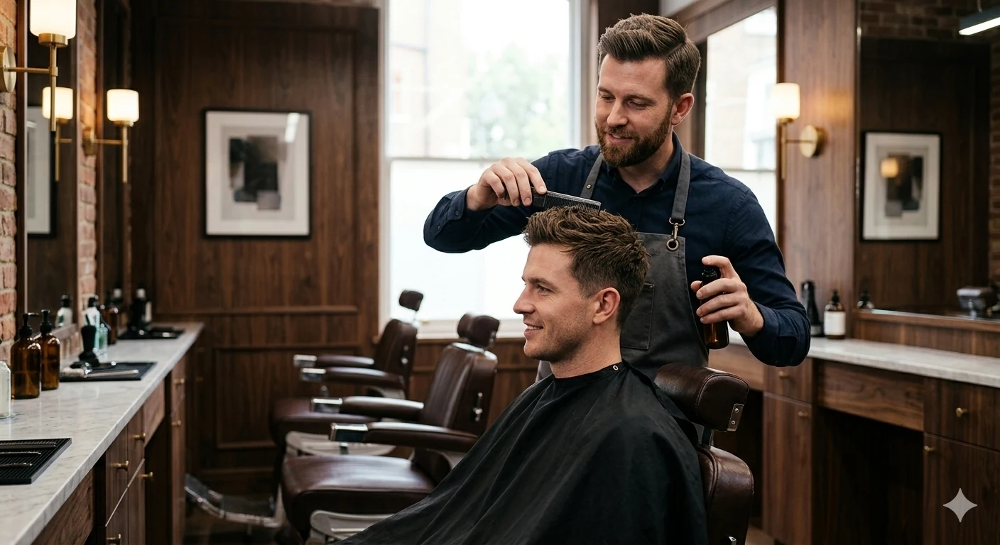

THE CUT
Scissor work, fades and tailored shapes built for your features.
View services →EST. 2016 · CITY BARBER HOUSE
A modern barber house built around precision, ritual and personal style.

THE MANIFESTO
From the first consultation to the final brush, every detail is considered. We pair old-school barber craft with a clean contemporary approach.
Scissor work, fades and tailored shapes built for your features.
View services →
A calm room, sharp tools, good records and no rush.
Discover the house →THE GENTLEMAN